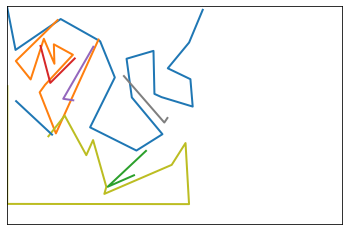
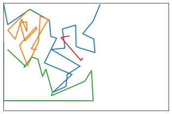

import io
import json
import math
import os
import autotrace
import numpy as np
import pandas as pd
from PIL import Image
# import tensorflow as tf
# from tensorboard.plugins import projector
# from fastai.vision.all import *
# from portfolio_search.embeddings import *
# from portfolio_search.fileorg import *vectorize
Fill in a module description here
Loading TSV’s and Input Images
autotrace_dir = "{singleline_data_home()}/svg/epoch-20231214/"preprocessed_dir = (
singleline_data_home() / "raster/epoch-20231214/10_SIMPLE_CROP"
)
clustered_drawings_tsv_fname = f"{preprocessed_dir}/clustered_drawings.tsv"
clustered_drawings_df = pd.read_csv(
clustered_drawings_tsv_fname, delimiter="\t", index_col="idx"
)
cdf = clustered_drawings_df
cdf.head()| abs_fname | rel_fname | label | pred_label | pred_idx | pred_probs | emb_csv | cluster | cluster_dist | metacluster | ... | drawings_cluster48_id | drawings_cluster48_dist | drawings_cropped_cluster16_id | drawings_cropped_cluster16_dist | drawings_cropped_cluster32_id | drawings_cropped_cluster32_dist | drawings_cropped_cluster48_id | drawings_cropped_cluster48_dist | drawings_cropped_cluster64_id | drawings_cropped_cluster64_dist | |
|---|---|---|---|---|---|---|---|---|---|---|---|---|---|---|---|---|---|---|---|---|---|
| idx | |||||||||||||||||||||
| 0 | /Users/al/Dropbox/2-Areas/2-Sketchbooks/datase... | art/sb77p043.jpg | art | xtra | 4 | 0.168532,0.008473,0.008068,0.016940,0.797986 | -0.6198182,-0.5714155,-0.6871516,-0.6553513,-0... | 11 | 199.22961 | 1 | ... | 15 | 166.33705 | 15 | 265.844100 | 15 | 257.350560 | 15 | 268.67297 | 58 | 276.82034 |
| 1 | /Users/al/Dropbox/2-Areas/2-Sketchbooks/datase... | art/sb67p021.jpg | art | xtra | 4 | 0.170976,0.008673,0.008480,0.017028,0.794843 | 1.1073987,0.3512016,-0.73929733,-0.6553513,1.7... | 3 | 132.26111 | 0 | ... | 45 | 137.20117 | 14 | 121.146545 | 31 | 122.172424 | 31 | 116.40921 | 34 | 122.04242 |
| 2 | /Users/al/Dropbox/2-Areas/2-Sketchbooks/datase... | art/sb25p227.jpg | art | xtra | 4 | 0.158396,0.008277,0.007424,0.016584,0.809319 | 1.3776337,-0.5714155,-0.2587232,-0.6553513,1.3... | 8 | 188.58075 | 0 | ... | 8 | 148.63470 | 10 | 220.298950 | 1 | 217.335360 | 1 | 213.25168 | 1 | 191.67163 |
| 3 | /Users/al/Dropbox/2-Areas/2-Sketchbooks/datase... | art/sb48p057.jpg | art | xtra | 4 | 0.165322,0.008453,0.008010,0.016587,0.801628 | 2.4936543,0.17563903,-0.6522293,-0.55642915,1.... | 14 | 90.26291 | 0 | ... | 28 | 83.96362 | 2 | 144.254030 | 21 | 129.951970 | 21 | 140.07254 | 21 | 144.77570 |
| 4 | /Users/al/Dropbox/2-Areas/2-Sketchbooks/datase... | art/sb77p044.jpg | art | xtra | 4 | 0.171638,0.008182,0.008061,0.016469,0.795650 | 2.170152,-0.01916939,-0.47766963,-0.6553513,-0... | 4 | 176.29102 | 0 | ... | 39 | 169.47894 | 15 | 151.277310 | 15 | 141.268980 | 15 | 145.39337 | 58 | 151.13809 |
5 rows × 41 columns
cdf.columnsIndex(['abs_fname', 'rel_fname', 'label', 'pred_label', 'pred_idx',
'pred_probs', 'emb_csv', 'cluster', 'cluster_dist', 'metacluster',
'metacluster_name', 'indiv_fname', 'visual_rel_path', 'visual_abs_path',
'handlabeled_rel_path', 'handlabeled_metacluster_name',
'handlabeled_metacluster_id', 'handlabeled_metacluster_was_correct',
'preprocessed_abs_path', 'handlabeled_abs_path', 'emb_csv_cropped',
'drawings_cluster_id', 'drawings_cluster_dist',
'drawings_cropped_cluster_id', 'drawings_cropped_cluster_dist',
'drawings_cluster32_id', 'drawings_cluster32_dist',
'drawings_cluster16_id', 'drawings_cluster16_dist',
'drawings_cluster64_id', 'drawings_cluster64_dist',
'drawings_cluster48_id', 'drawings_cluster48_dist',
'drawings_cropped_cluster16_id', 'drawings_cropped_cluster16_dist',
'drawings_cropped_cluster32_id', 'drawings_cropped_cluster32_dist',
'drawings_cropped_cluster48_id', 'drawings_cropped_cluster48_dist',
'drawings_cropped_cluster64_id', 'drawings_cropped_cluster64_dist'],
dtype='object')cols_subset = [
"indiv_fname",
"visual_rel_path",
"visual_abs_path",
"handlabeled_rel_path",
"handlabeled_metacluster_name",
"handlabeled_metacluster_id",
"handlabeled_metacluster_was_correct",
"preprocessed_abs_path",
"handlabeled_abs_path",
"emb_csv_cropped",
"drawings_cluster_id",
"drawings_cluster_dist",
]
cdf[cols_subset].head()| indiv_fname | visual_rel_path | visual_abs_path | handlabeled_rel_path | handlabeled_metacluster_name | handlabeled_metacluster_id | handlabeled_metacluster_was_correct | preprocessed_abs_path | handlabeled_abs_path | emb_csv_cropped | drawings_cluster_id | drawings_cluster_dist | |
|---|---|---|---|---|---|---|---|---|---|---|---|---|
| idx | ||||||||||||
| 0 | sb77p043.jpg | 1_watercolors/sb77p043.jpg | /Users/al/Dropbox/2-Areas/2-Sketchbooks/datase... | 0_drawings/sb77p043.jpg | 0_drawings | 0 | False | /Users/al/Dropbox/2-Areas/2-Sketchbooks/datase... | /Users/al/Dropbox/2-Areas/2-Sketchbooks/datase... | -0.6198182,-0.5714155,0.2937309,0.2691822,-0.6... | 3 | 217.249590 |
| 1 | sb67p021.jpg | 0_drawings/sb67p021.jpg | /Users/al/Dropbox/2-Areas/2-Sketchbooks/datase... | 0_drawings/sb67p021.jpg | 0_drawings | 0 | True | /Users/al/Dropbox/2-Areas/2-Sketchbooks/datase... | /Users/al/Dropbox/2-Areas/2-Sketchbooks/datase... | -0.20756221,-0.24843562,0.29454154,-0.6553513,... | 2 | 169.947700 |
| 2 | sb25p227.jpg | 0_drawings/sb25p227.jpg | /Users/al/Dropbox/2-Areas/2-Sketchbooks/datase... | 0_drawings/sb25p227.jpg | 0_drawings | 0 | True | /Users/al/Dropbox/2-Areas/2-Sketchbooks/datase... | /Users/al/Dropbox/2-Areas/2-Sketchbooks/datase... | -0.6198182,-0.428226,-0.73929733,-0.6553513,-0... | 3 | 162.882430 |
| 3 | sb48p057.jpg | 0_drawings/sb48p057.jpg | /Users/al/Dropbox/2-Areas/2-Sketchbooks/datase... | 0_drawings/sb48p057.jpg | 0_drawings | 0 | True | /Users/al/Dropbox/2-Areas/2-Sketchbooks/datase... | /Users/al/Dropbox/2-Areas/2-Sketchbooks/datase... | -0.34353483,-0.5714155,2.2665114,-0.6553513,-0... | 4 | 94.257965 |
| 4 | sb77p044.jpg | 0_drawings/sb77p044.jpg | /Users/al/Dropbox/2-Areas/2-Sketchbooks/datase... | 0_drawings/sb77p044.jpg | 0_drawings | 0 | True | /Users/al/Dropbox/2-Areas/2-Sketchbooks/datase... | /Users/al/Dropbox/2-Areas/2-Sketchbooks/datase... | -0.3477007,-0.5714155,-0.73929733,-0.6553513,-... | 0 | 173.559940 |
cdf["autotrace_abs_path"] = cdf.handlabeled_rel_path.map(
lambda p: os.path.join(autotrace_dir, p.replace(".jpg", ".svg"))
)# limit = 5
# for idx in range(len(cdf)):
# if idx > limit:
# break
# row = cdf.iloc[idx]
# print(row.preprocessed_abs_path, row.autotrace_abs_path)
# dest_dir = os.path.dirname(row.autotrace_abs_path)
# if not os.path.isdir(dest_dir):
# os.makedirs(dest_dir)
# image = np.asarray(Image.open(row.preprocessed_abs_path).convert("RGB"))
# bitmap = autotrace.Bitmap(image)
# # Trace the bitmap. Options:
# # - https://github.com/lemonyte/pyautotrace/blob/main/autotrace/autotrace.py#L83
# vector = bitmap.trace(centerline=True, error_threshold=8.0, filter_iterations=4)
# vector.save(row.autotrace_abs_path)/Users/al/Dropbox/2-Areas/2-Sketchbooks/datasets/full-v2/10_SIMPLE_CROP/0_drawings/sb77p043.jpg /Users/al/Dropbox/2-Areas/2-Sketchbooks/datasets/full-v2/11_AUTOTRACE/0_drawings/sb77p043.svg
/Users/al/Dropbox/2-Areas/2-Sketchbooks/datasets/full-v2/10_SIMPLE_CROP/0_drawings/sb67p021.jpg /Users/al/Dropbox/2-Areas/2-Sketchbooks/datasets/full-v2/11_AUTOTRACE/0_drawings/sb67p021.svg
/Users/al/Dropbox/2-Areas/2-Sketchbooks/datasets/full-v2/10_SIMPLE_CROP/0_drawings/sb25p227.jpg /Users/al/Dropbox/2-Areas/2-Sketchbooks/datasets/full-v2/11_AUTOTRACE/0_drawings/sb25p227.svg
/Users/al/Dropbox/2-Areas/2-Sketchbooks/datasets/full-v2/10_SIMPLE_CROP/0_drawings/sb48p057.jpg /Users/al/Dropbox/2-Areas/2-Sketchbooks/datasets/full-v2/11_AUTOTRACE/0_drawings/sb48p057.svg
/Users/al/Dropbox/2-Areas/2-Sketchbooks/datasets/full-v2/10_SIMPLE_CROP/0_drawings/sb77p044.jpg /Users/al/Dropbox/2-Areas/2-Sketchbooks/datasets/full-v2/11_AUTOTRACE/0_drawings/sb77p044.svg
/Users/al/Dropbox/2-Areas/2-Sketchbooks/datasets/full-v2/10_SIMPLE_CROP/0_drawings/sb11p024.jpg /Users/al/Dropbox/2-Areas/2-Sketchbooks/datasets/full-v2/11_AUTOTRACE/0_drawings/sb11p024.svginput_jpg = singleline_data_home() / "raster/epoch-20231214/10_SIMPLE_CROP/0_drawings/sb77p043.jpg"
input_fname = "{singleline_data_home()}/svg/epoch-20231214/0_drawings/sb77p043.svg"CENTERLINE_TRACE_DIR="/Users/al/code/_svg/inkscape-centerline-trace"
INPUT_DIR=singleline_data_home() / "raster/epoch-20231214/10_SIMPLE_CROP/0_drawings"
OUTPUT_DIR="{singleline_data_home()}/svg/epoch-20231214/0_drawings"
for file in $(ls $INPUT_DIR); do
export idx=$(basename $file .jpg)
export inpath=$INPUT_DIR/$file
export outpath=$OUTPUT_DIR/$idx.svg
if ! [ -f $outpath ]; then
echo "$outpath does not exist."
$CENTERLINE_TRACE_DIR/centerline-trace.sh $inpath > $outpath
else
echo "$outpath exists; skipping."
fi
doneinspect
# import svgpathtools
# paths, attributes, svg_attributes = (
# paths,
# attributes,
# svg_attributes,
# ) = svgpathtools.svg2paths(input_fname, return_svg_attributes=True)from singleline_dataset.display import *
from singleline_dataset.strokes import *
from singleline_dataset.svg_files import *
from singleline_dataset.transforms import *total_n = 1000
min_n = 3
rescaled_strokes = svg_to_strokes(input_fname, total_n=total_n, min_n=1)
joined_strokes, _ = merge_until(rescaled_strokes, dist_threshold=15.0)
spliced_strokes, _ = splice_until(joined_strokes, dist_threshold=40.0)plot_strokes(rescaled_strokes)
plot_strokes(spliced_strokes)